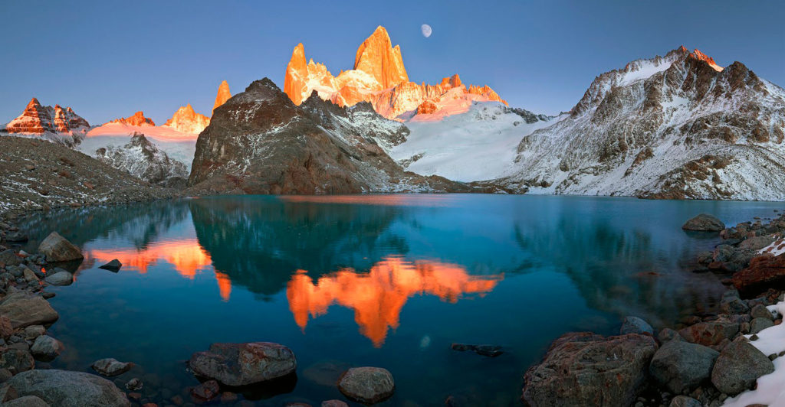
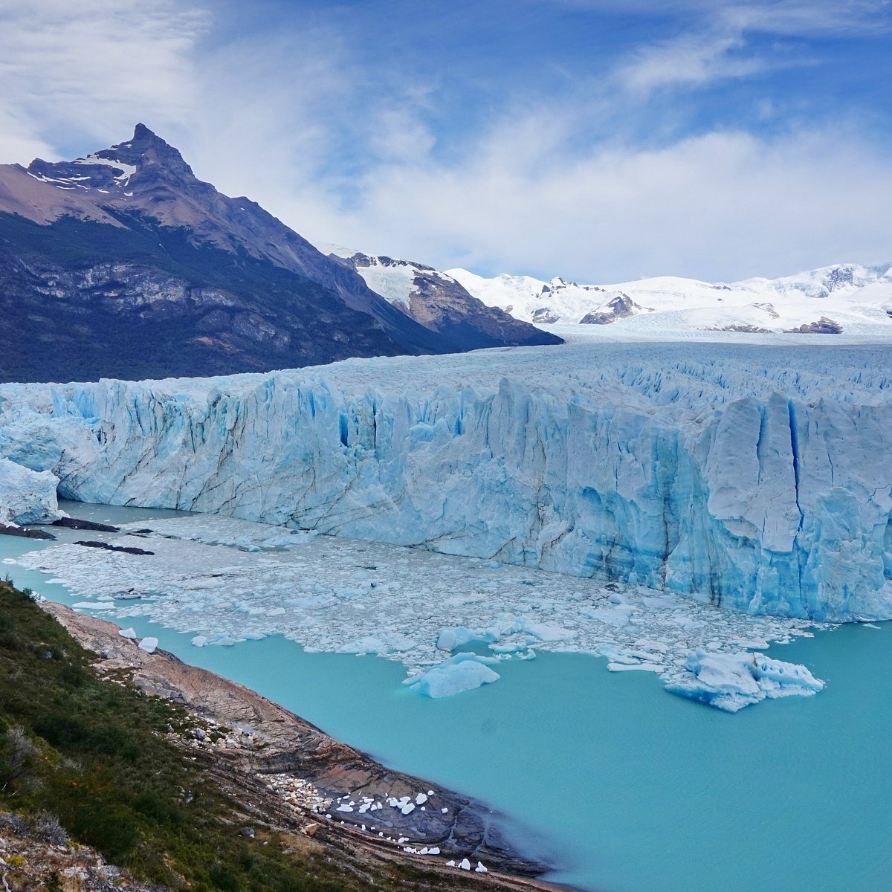
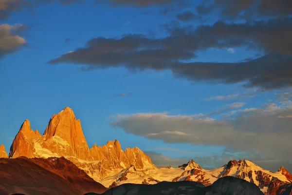
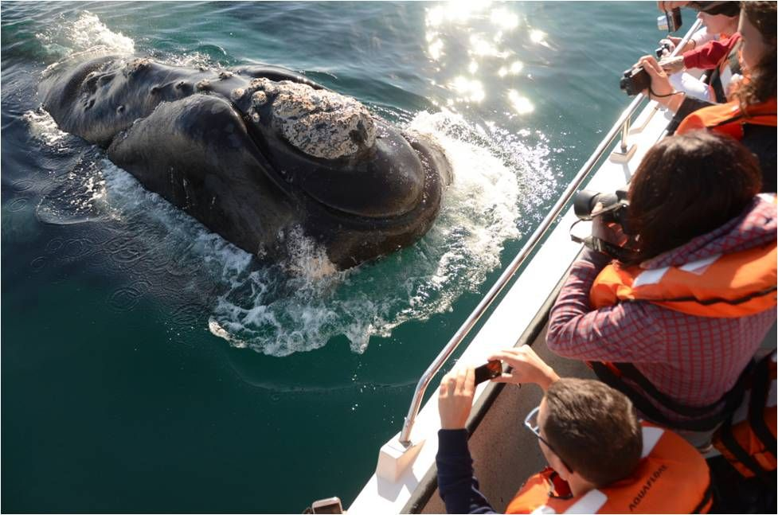
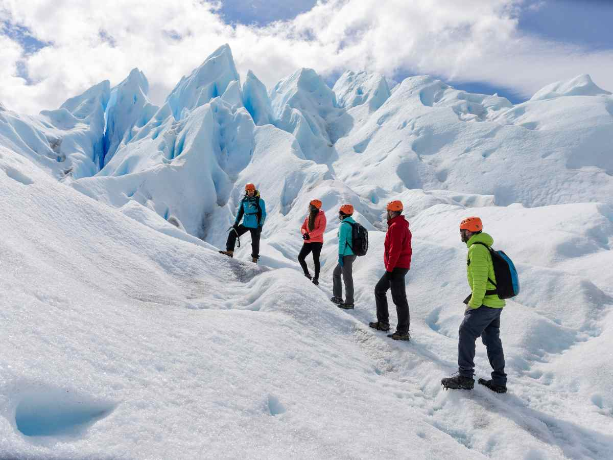

El Fin del Mundo te Espera

Vista del paisaje patagónico con los Andes de fondo.
La Patagonia argentina es una de las regiones más imponentes y salvajes del planeta. Ubicada en el extremo sur del continente americano, abarca las provincias de Neuquén, Río Negro, Chubut, Santa Cruz, Tierra del Fuego y parte de La Pampa. Sus paisajes de estepa infinita, montañas nevadas, lagos cristalinos y glaciares milenarios la convierten en un destino único para los amantes de la naturaleza y la aventura.
Desde el imponente Glaciar Perito Moreno hasta las agujas de granito del Cerro Fitz Roy y el Cerro Torre, cada rincón patagónico ofrece una experiencia inolvidable.
Glaciares Milenarios

El imponente Glaciar Perito Moreno en el Parque Nacional Los Glaciares.
La Patagonia alberga la tercera masa de hielo continental más grande del mundo, después de la Antártida y Groenlandia. El Glaciar Perito Moreno, dentro del Parque Nacional Los Glaciares, es el más famoso: un río de hielo de 30 km de longitud que aún avanza, provocando rupturas espectaculares.
Otros glaciares imponentes son el Upsala, el Spegazzini y el Viedma, todos accesibles desde El Calafate mediante navegaciones o caminatas sobre el hielo.
Montañas de Ensueño

Cerro Fitz Roy iluminado por los primeros rayos del sol, El Chaltén.
El Cerro Fitz Roy (3.405 m) en El Chaltén es un ícono del montañismo mundial. Su silueta inconfundible inspira a miles de trekking lovers cada año. Cerca de allí, el Cerro Torre desafía con sus paredes verticales.
En la zona de Bariloche, el Cerro Catedral es el centro de esquí más grande de Sudamérica, mientras que el Volcán Lanín (3.776 m) domina el paisaje neuquino con su cono perfecto.
- Fitz Roy & Laguna de los Tres — Trekking de nivel mundial
- Cerro Catedral — Esquí y snowboard en invierno
- Volcán Lanín — Ascenso técnico y vistas increíbles
Fauna Patagónica

Avistaje de ballena franca austral en Puerto Pirámides, Península Valdés.
La región es refugio de especies únicas. En Península Valdés (Patrimonio de la Humanidad) se pueden avistar ballenas francas australes, orcas, pingüinos de Magallanes, elefantes marinos y guanacos.
En los bosques andinos habitan el huemul (ciervo en peligro de extinción), el cóndor andino y el sigiloso puma. La estepa es dominio del choique (ñandú petiso) y el zorro gris.
Turismo y Aventura

Excursión de trekking sobre el hielo en el Glaciar Perito Moreno.
La mejor época para visitar es de octubre a marzo (primavera-verano austral), con días largos y temperaturas agradables. En invierno, el esquí toma protagonismo.
Actividades imperdibles: trekking en El Chaltén, navegación frente al Perito Moreno, recorrer la Ruta 40, visitar Ushuaia (la ciudad más austral) y disfrutar la gastronomía patagónica (cordero, trucha, chocolates).
- Ruta de los Siete Lagos — Villa La Angostura a San Martín
- Tren del Fin del Mundo — Viaje histórico en Ushuaia
- Cueva de las Manos — Arte rupestre de 9.000 años
- Cerro Castor — Nieve de calidad en Tierra del Fuego